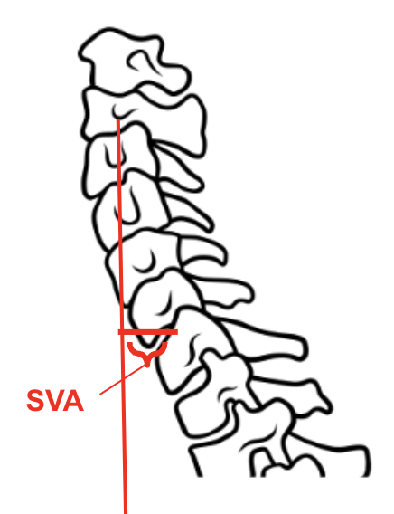
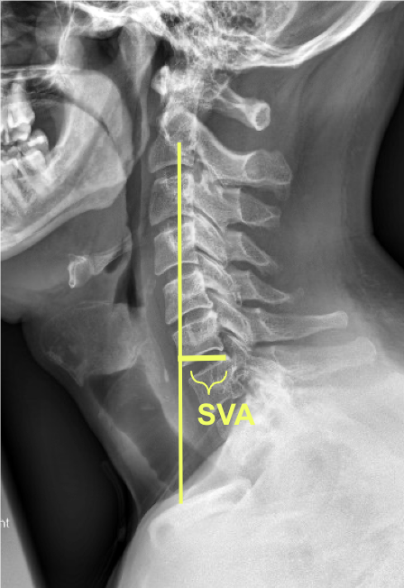

1) Description of Measurement
The cervical sagittal vertical axis (cSVA) is a measure of cervical sagittal alignment and global balance. It is defined as the horizontal distance (in millimeters) from the vertical plumb line dropped from the centroid of C2 to the posterior–superior corner of the C7 vertebral body on a standing lateral cervical spine x-ray.
2) Instructions to Measure
3) Normal vs. Pathologic Ranges
4) Important References
Tang JA, Scheer JK, Smith JS, et al; ISSG. The impact of standing regional cervical sagittal alignment on outcomes in posterior cervical fusion surgery. Neurosurgery. 2012 Sep;71(3):662-9; discussion 669. doi: 10.1227/NEU.0b013e31826100c9.
Ames CP, Blondel B, Scheer JK, et al. Cervical radiographical alignment: comprehensive assessment techniques and potential importance in cervical myelopathy. Spine (Phila Pa 1976). 2013 Oct 15;38(22 Suppl 1):S149-60. doi: 10.1097/BRS.0b013e3182a7f449.
Scheer JK, Tang JA, Smith JS, et al; International Spine Study Group. Cervical spine alignment, sagittal deformity, and clinical implications: a review. J Neurosurg Spine. 2013 Aug;19(2):141-59. doi: 10.3171/2013.4.SPINE12838. Epub 2013 Jun 14.
5) Other info....
Strongly correlated with Neck Disability Index (NDI): as cSVA increases, NDI worsens.
Particularly important in patients with cervical deformity (kyphosis, iatrogenic flat neck, ankylosing spondylitis).
Often reported in conjunction with cervical lordosis (C2–C7 Cobb angle) and T1 slope–cervical lordosis mismatch to better understand overall cervical alignment.